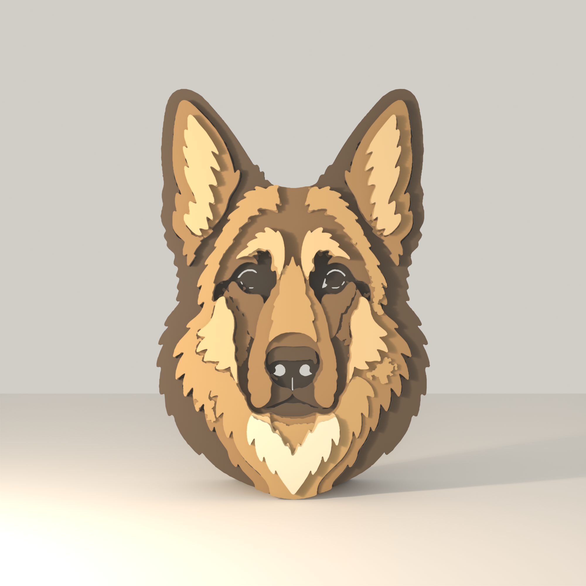
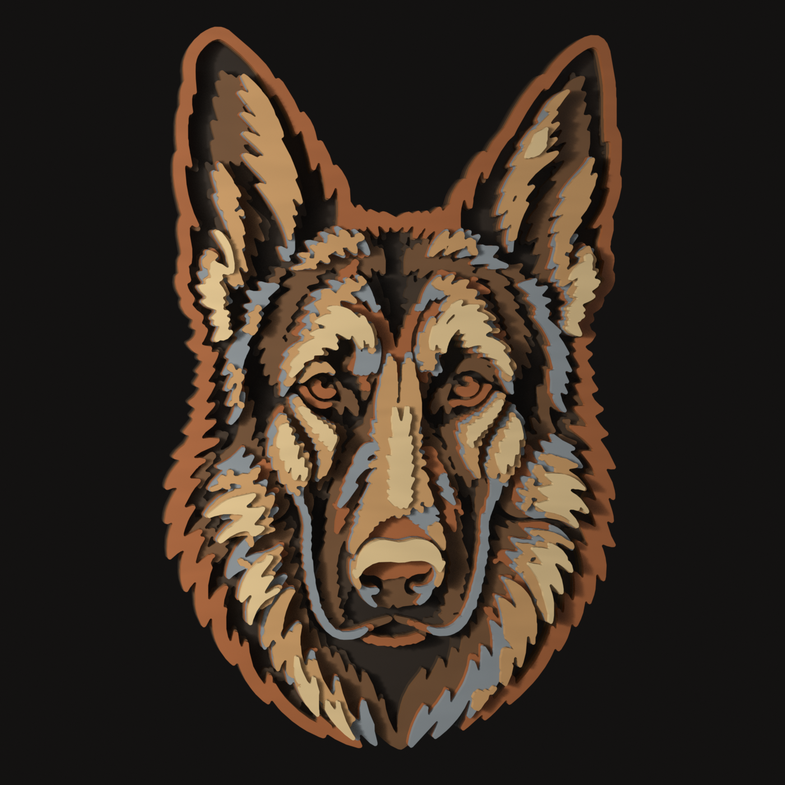
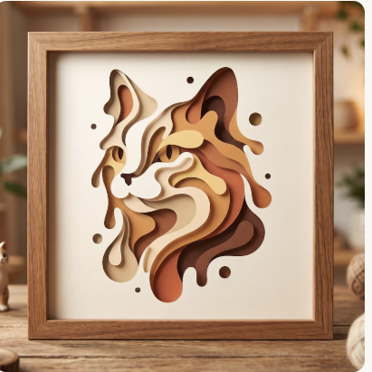
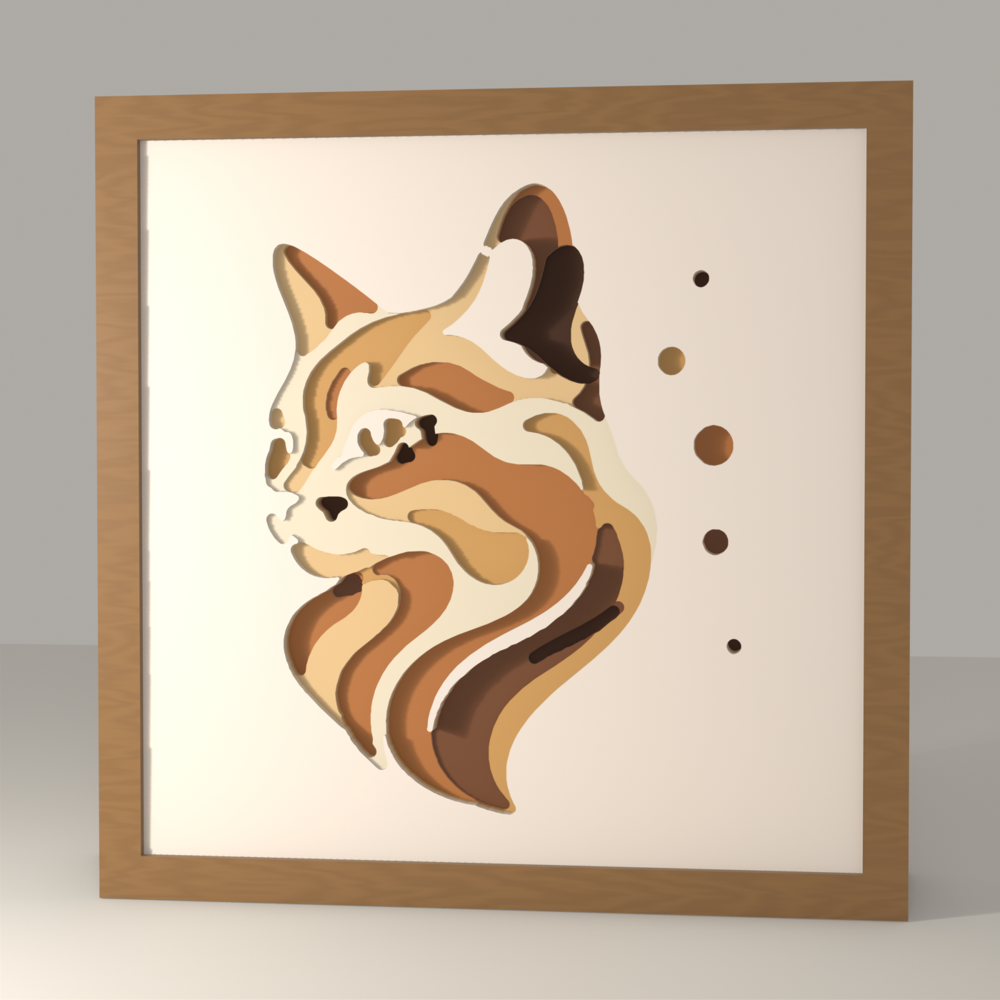
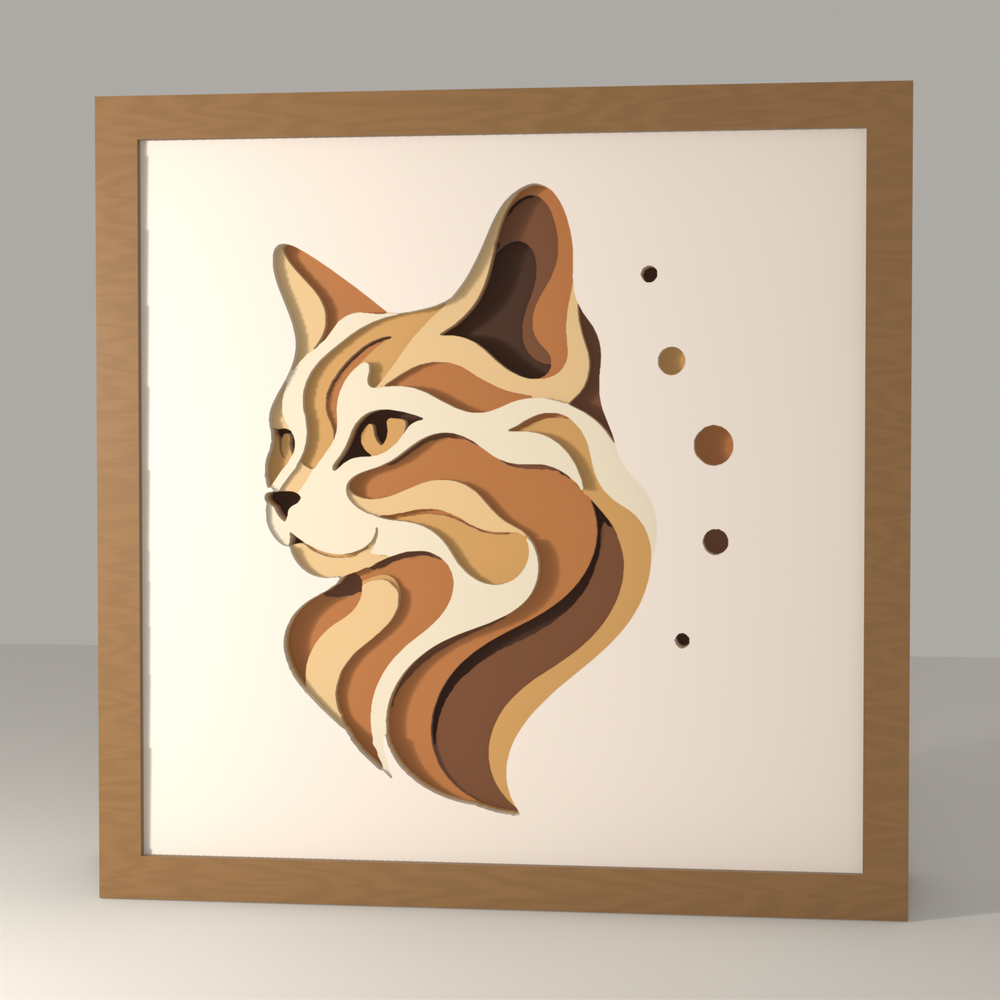
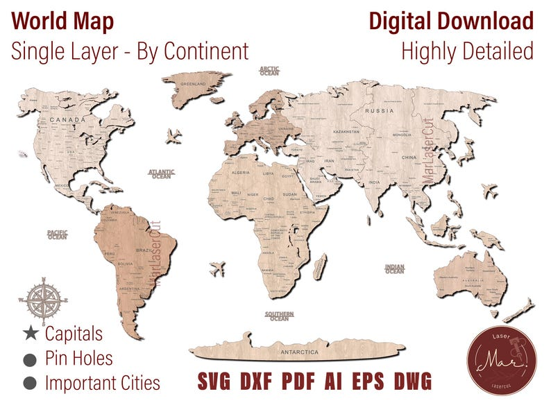
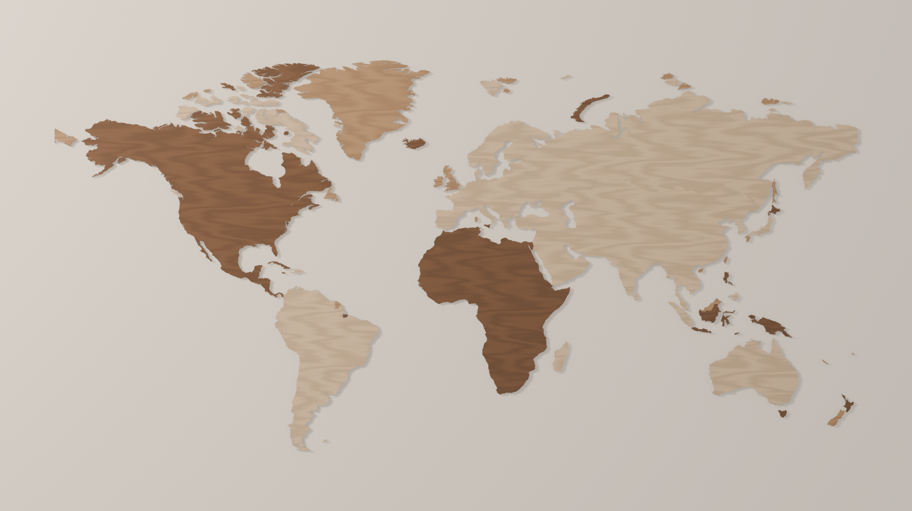
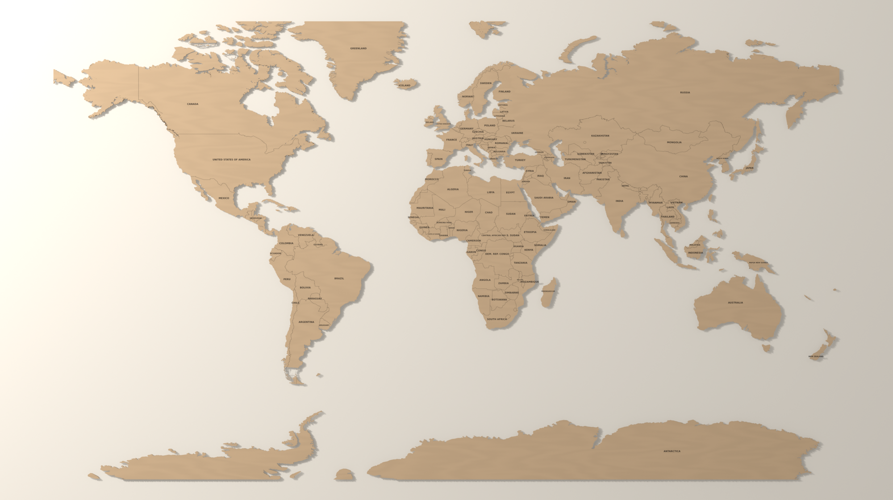
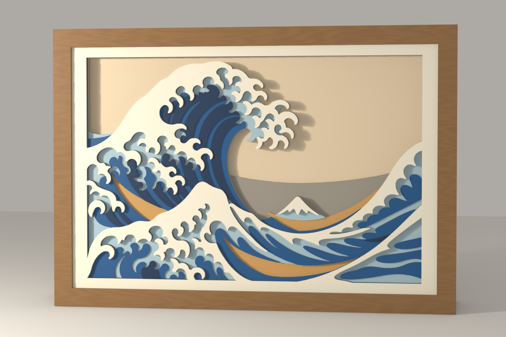
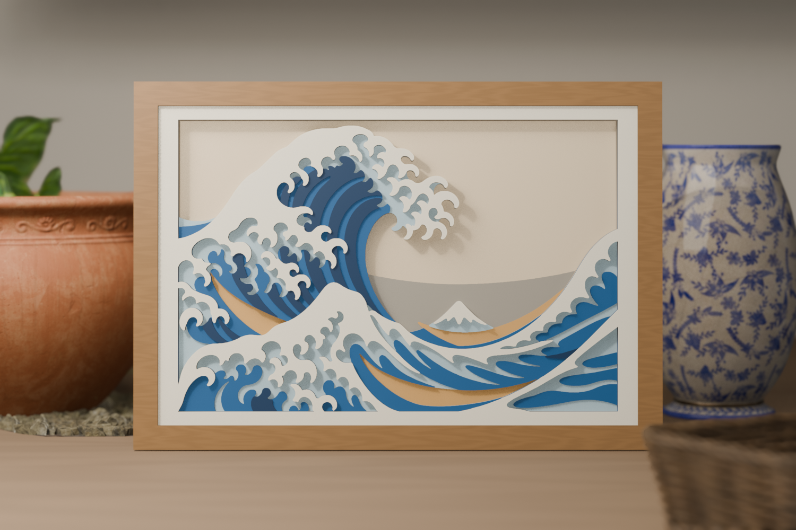

A korábbi forrástermékek, az előző eredmények és az új, tényleges SVG-geometriából renderelt változatok. A jobb oldali képek Blender-kimenetek; a képgenerátor csak a két állatportré új bemeneti rajzát készítette.


Javult: Élesebb szőrmintázat, hosszabb pofa, elkülönülő kékesszürke és réz rétegek.
Maradt: Még 7 réteg a referencia 8 rétege helyett; sok külön ragasztandó rész, az orr színe túl világos.
Recept és mért eredmények · Geometriai riport · Futási manifest



Javult: Változatlan depth map: javított rétegillesztés, ép mandulaszem és pupilla, folytonos fül és nyakszalag.
Maradt: A referencia színvilága és stilizálása továbbra is eltér. A mentett referencia pontos Etsy-URL-je ismeretlen.



Javult: Egységes világos fa, látható országhatárok, egy felirat országonként; Antarktisz visszakerül a kivágásba.
Maradt: A referencia óceánfeliratai, városnevei és díszítőelemei még hiányoznak. A földrajzi vetület és a fotós környezet is eltér.


Referencia-listing: MarLaserCut, 9 réteg, 39,8 × 26 cm; a tervét nem másoltuk, csak a mércét. Saját: 7 lap (tömör hátlap + 6), 400 × 266,8 mm, krém keret minden lapon, 0 nyak, legvékonyabb pont 7,8 mm. Fizikai tesztvágás nem történt.
A szoftveres küszöbök ellenőrzése sikeres. Ez nem fizikai tesztvágás vagy piaci validáció. A juhászkutya apró elemei több ragasztási munkát igényelnek. A külön réteges Vyva-térkép pontos Etsy-oldala jelenleg nem volt elérhető; ahhoz nem állítunk új vizuális referenciaegyezést.
Termékcsaládok és teljes iterációtörténet